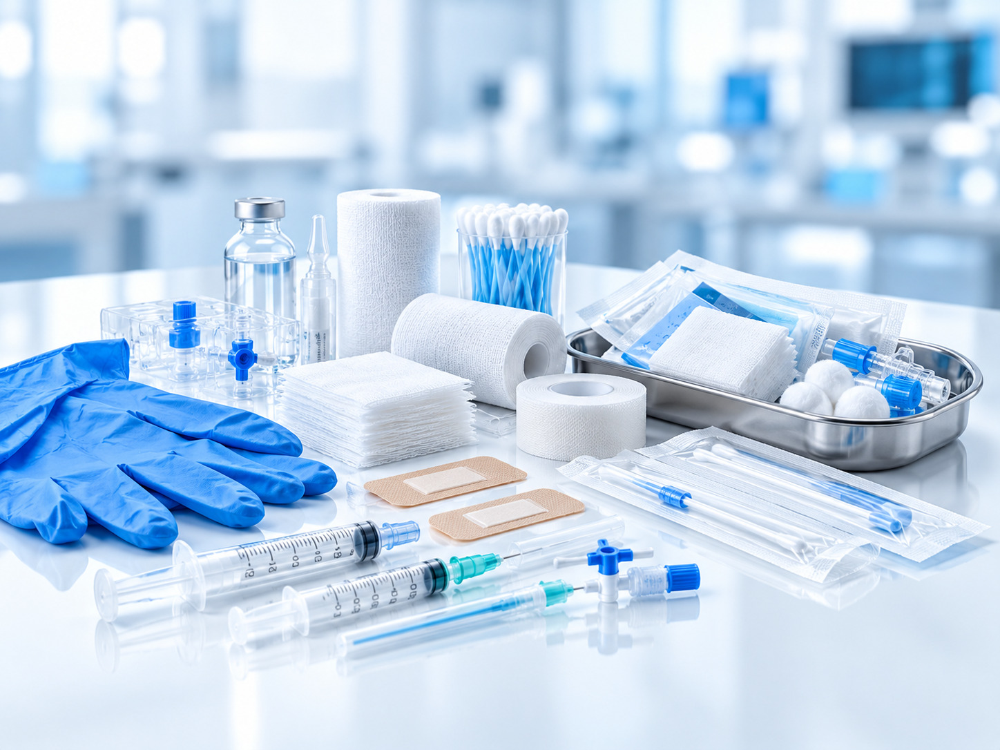

GLOBAL SUPPLY. BETTER HEALTHCARE.
Advancing Healthcare
Through Quality
Medical Solutions.
VERX Global brings together a comprehensive range of medical products, equipment and healthcare solutions for professional buyers and healthcare organisations worldwide.
QUALITY-FOCUSED PRODUCTS.
CONNECTED HEALTHCARE.
CONNECTED HEALTHCARE.
Quality FocusedDocumentation-led approach
Global OutlookInternational supply enquiries
Supply CoordinationResponsive procurement support
Professional PartnersHealthcare and trade customers
OUR PRODUCT CATEGORIES
Comprehensive Solutions for Modern Healthcare
From everyday consumables to specialised clinical supplies, we offer a broad medical product portfolio designed around professional healthcare needs.


Images are illustrative product concepts; availability, specifications, documentation and regulatory status are confirmed per enquiry.

THE VERX BRANDQuality Products
Quality Products
You Can Trust.
Our VERX product approach brings a focus on quality, safety, reliability and commercial value — supporting healthcare professionals and buyers across different markets.
Explore the VERX Range ↗WHY CHOOSE VERX GLOBAL
A Partner for Better Healthcare
Product choice, clear communication and practical support at every stage.
◇
Quality Focus
Attention to product suitability and documentation
◎
Global Perspective
Serving enquiries across international markets
♧
Customer Centric
Solutions tailored to your requirements
⚙
Reliable Coordination
Clear communication throughout your enquiry
INTERNATIONAL OUTLOOKSupporting Healthcare
Supporting Healthcare
Around the World.
We welcome enquiries from healthcare providers, institutions, distributors and commercial buyers.
Discuss Your Requirements ↗HOW IT WORKS
A Simple Process, From Enquiry to Delivery
From an initial requirement to a coordinated supply discussion, our process is designed to be clear and practical.
01
Submit Your Enquiry
Tell us what you need, including products, volumes and destination.
02
Receive a Tailored Quote
We discuss relevant product options and commercial details.
03
Confirm Your Order
Clarify specifications, documentation and applicable supply terms.
04
Plan Global Delivery
Coordinate fulfilment based on product availability and market needs.
QUALITY & COMPLIANCE
Our Quality Approach ↗Confidence starts with the right documentation.
Regulatory documentation and quality requirements differ by product and destination market. We prioritise clear, product-specific information for informed procurement.